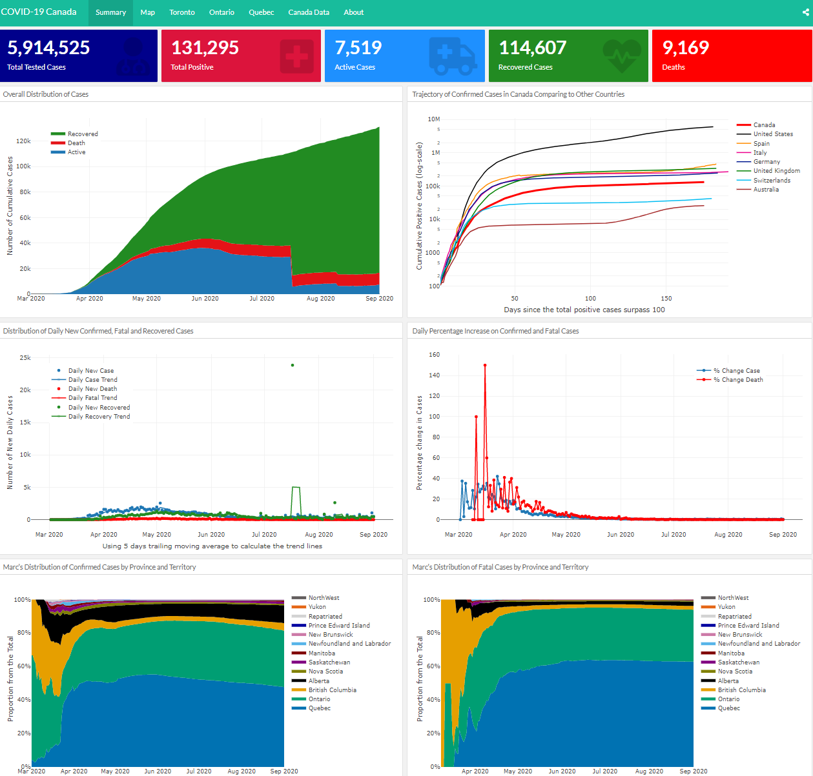
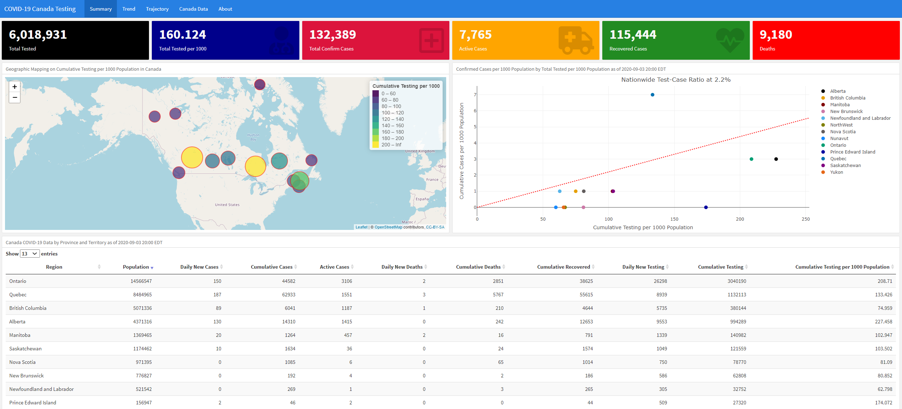

Date Created: Jun 01, 2020
Date Updated: May 12, 2021
This work is produced by replicating the subnational analysis provided at https://epiforecasts.io/covid/ by a team of researchers lead by Prof. Sebastian Funk at the Centre for the Mathematical Modelling of Infectious Disases, London School of Hygiene and Tropical Medicine.
Two R packages developed by the same team were used, the EpiNow R package and the EpiSoon R package. In addition, the forecastHybrid R package developed by David Shaub and Peter Ellis is used to produce a 14-day forecast on R0. Canada data is extracted again from the open-access data provided by the COVID-19 Canada Open Data Working Group.
Complete model output is available at https://github.com/Kuan-Liu/Kuan-Liu.github.io/tree/master/docs/regional-summary and https://github.com/Kuan-Liu/Kuan-Liu.github.io/tree/master/docs/city-summary.
You can find here,
Last analysis update: Janurary 20, 2021
This is a joint work with Rose Garrett. Our interactive dashboard is hosted at https://kuan-liu.shinyapps.io/canada_dash/. We provide descriptive data visualization on Canada COVID-19 confirmed, active, recovered cases, and deaths data provided by the COVID-19 Canada Open Data Working Group. I coded the original version using Rami Krispin’s Covid19 Italy dashboard as template back in early April.
Highlight of the dashboard content:

Dashboard preview
We provide a comprehensive descriptive data visualization on COVID-19 testing data in Canada. Data used in this dashboard are from the COVID-19 Canada Open Data Working Group and Our World In Data.
Project Members

Dashboard preview